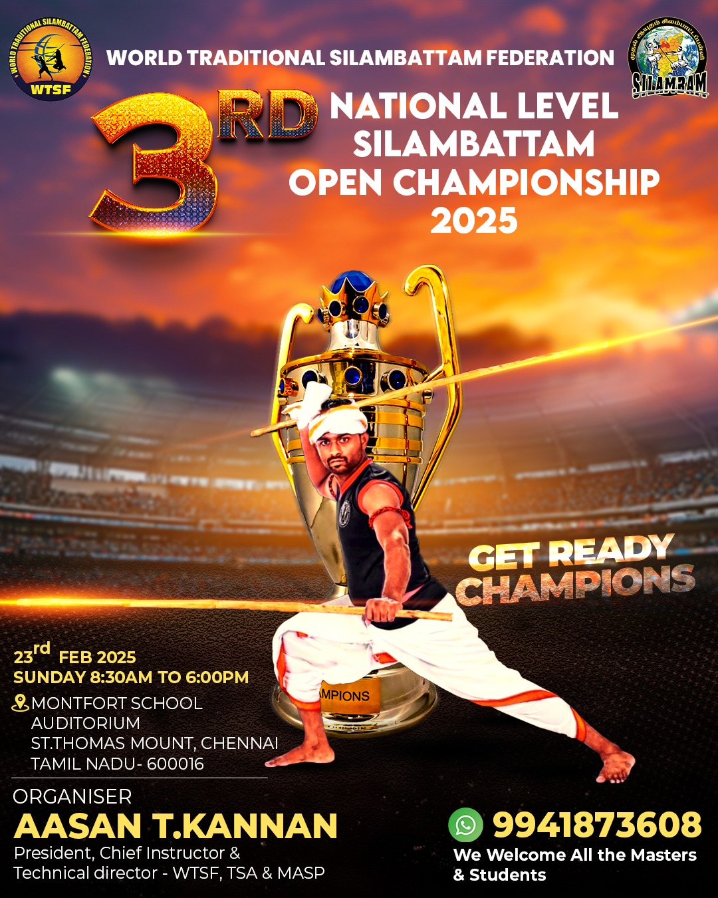
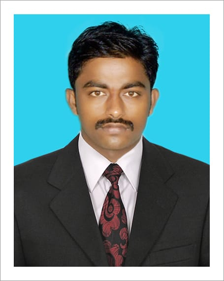
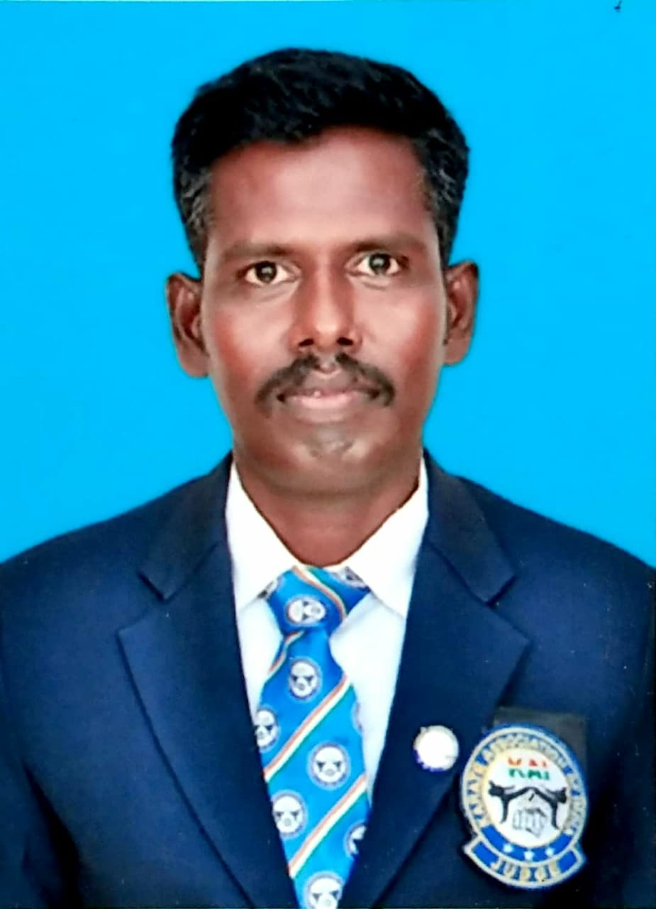
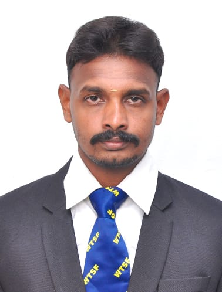
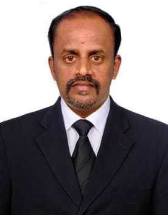

About our Federation
Silambam is a traditional martial art developed in Tamilnadu, India. It is originated around 1000 BCE. This ancient fighting style is mentioned in Tamil Sangam literature 400 BCE. Silambam is now predominantly a striking art using punching, kicking, knee strikes, elbow strikes, weapon strikes and open-hand techniques such as knife-hands, spear-hands and palm-heel strikes. Archaeologically, and in some modern styles, grappling, throws, joint locks, restraints and vital-point strikes are also taught.
LEARN
Structured training programs for beginners to advanced practitioners, following traditional teaching methods.
SECURE
Certification and recognition for practitioners, ensuring authentic lineage and proper technique.
TEACH
Instructor training programs to ensure the art is passed down to future generations with integrity.
Our Chief Instructor

T.Kannan is a professional martial arts instructor who is a renowned international champion for 3 times. He had made his arch rivals bite the dust, including opponents from Australia, Sri Lanka, England. Apart from his international recognition, he also has many national and state awards.
History: He was born on 3rd June 1986 to Mr.Thavamani and Mrs.Rajeshwari in Madurai. He completed his school education in Karankalakudi Govt. Hr. Sec. School and pursued his Bachelors degree in history from TamilNadu Open University.
He got his 1st Dan belt in Shotokan karate in 2003. Since then, he went on to become the secretary of the TamilNadu Traditional Shotokan Karate Association. He has practiced Yoga, Varma and Kaaladi Kuthuvarisai right from 2007 from his teacher, Veerayogi Kannan. He also has practiced Kalarpathu, Silampattam from 2001 from his teacher Gajendran.
He also has practiced gymnasium from the renowned stunt master Butti Vijay and Boobalan. Also he has practiced Thacholian Parambarai Kalari for 3 years from Master Joseph. He had also practiced Kobudo in Shorinruyo Shorikan style from Master Ratnam and Sensai Robert.
He has completed his diploma in yoga in 2010 under Yogi Ramalingam from Madurai. He has also practiced Pranic healing, Reiki, Varma therapy and yoga therapy.
He has recently completed his 5th Dan black belt under the Chief Instructor of Shotokan Do Federation, India — Sensei Chatterjith Chaudary in 2016.
He is the founder of the Tamil traditional martial art — Kaladi Kuthuvarisai and Mudhal Ayudham Silambattam.
He has students all over India and also had trained foreign students. He has trained many students who went on to become International and National champions. He has conducted many state and district level competitions across TamilNadu. He has also created many records and also participated in the popular reality show — Dhil Dhil Manadhil in Kalaignar TV.
He has many students who are now teaching karate in TamilNadu, Assam, Kerala, Andhra and also in foreign countries like Nepal. His students, who have participated in Tamil Traditional Martial Arts have been state kickboxing and boxing champions. He is also one of the jury who head the state championship in sports, yoga.
He has also attended camps Muay Thai, Krauv Maga and other martial arts. He has conducted various self defence campaigns for NCC and women.
He founded the KKV Martial Arts Academy in 2007. KKV Martial Arts Academy teaches a wide range of martial arts ranging from Karate, Silambattam, Boxing, Kick-boxing, Varma Kalai, Yoga, Weapon Training to Varma Therapy, Yoga therapy for curing all types of diseases without medicines.
Leadership



